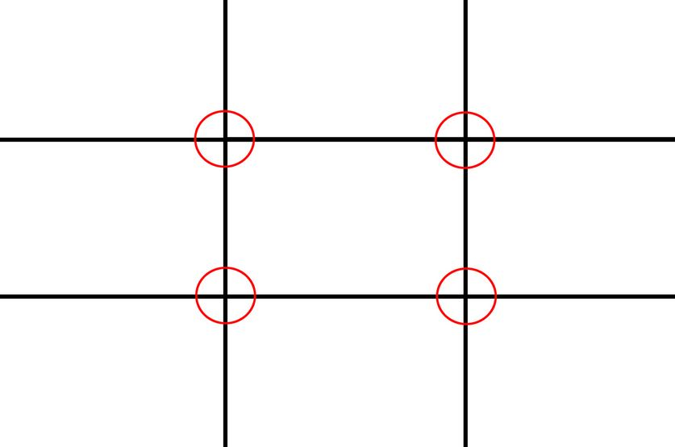
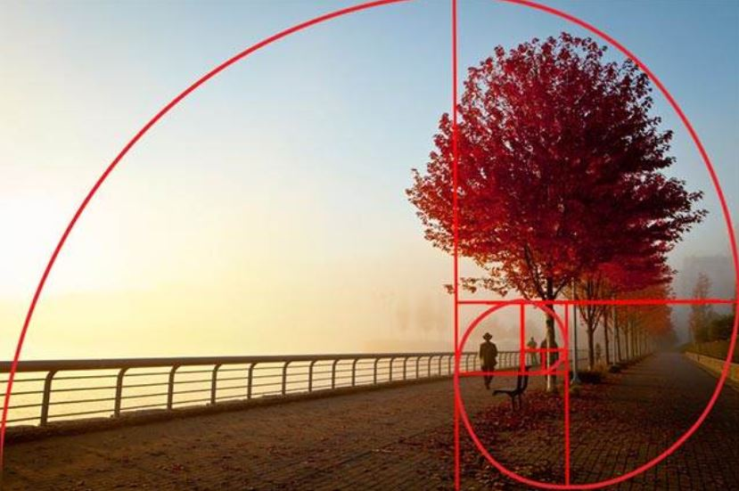

Gestaltlovene
Gestaltlovene handler om perception (helhed). Gestaltlovene går ud på, at se tingene som helhed og samtidig er de med til at skabe overblik. Gestaltlovene er design principper, der hjælper med at organisere sine informationer, så brugeren nemt kan overskue det.
Gestaltlove i webdesign
Ved at bruge lovene når du designer din hjemmeside, skaber du overblik i dit design, så design og funktionalitet går hånd i hånd.
Proximity
Objekter der ligner hinanden, opfatter vi som en gruppe. Similarity kan bruges med farve, størrelse, tekstur og fonte. Som eksempel kan vi tage boksene nedenfor. Her vi vil opfatte boksene som 2 grupper - en lyseblå og en mørkeblå gruppe.
{kind=link}
Similarity
Ved at placere objekter tæt på hinanden opfatter man dem relaterede i forhold til objekter, som er placeret langt væk fra hinanden.
{kind=link}
Continuty - Kontinuitet
Continuty går ud på, at ens design leder øjet mod en bestemt retning eller kurve. Objekter der følger samme kurve, opfattes som relaterede.
{kind=link}
Common fate
Når elementer opfører sig på samme måde, så opfatter vi dem som relateret. Eksempelvis kan vi se at alle tre fugle flyver i samme retning. Vi opfatter common fate ofte meget instinktivt, da det optræder mange steder i vores dagligdag, og på den måde ligger det i vores underbevidsthed.
Symmetry
Symmetry er med til at give ro, harmoni og overblik, i forhold til asymmetri, der kan få ting til at se rodet ud. Symmetry kan i nogle tilfælde virke kedeligt, hvorimod asymmetry kan være med til at skabe liv og spænding i et design.
- Translation:
Når der findes to eller flere elementer forskellige steder i kompositionen - Rotation
Kan være når elementerne er roteret ud fra et bestemt punkt, men ikke nødvendigvis. - Reflektion
Når elementerne er spejlet eller reflekteret om en spejlingsakse.
{kind=link}
Closure
Closure opstår når en figur ikke er afsluttet eller et område ikke er lukket. Closure handler om, at vi selv udfylder formen.
{kind=link}
White space
Whitespace er et designprincip, der er med til at forbedre brugeroplevelsen på hjemmesider og eksempelvis tryksager. Whitespace er alt den luft vi har rundt om vores indholdselementer. Whitespace kan bruges i tekst i form af linjeafstand eksempelvis eller på billeder, knapper og andet.
Som eksempel kan vi se, at Google bruger whitespace til at sætte fokus på det vigtigste element på siden og det er søgefunktionen.
{kind=link}
Figure ground
Det handler om at adskille en genstand fra omgivelsern. Alt afhængigt af farve eller størrelse. Kontrast opfatter mennesket
Rule of thirds
Handler om at skabe et interessepunkt i eksempelvis et billede, og er med til at skabe et balanceret og naturligt foto.
- Del billedet op i 9 lige store felter
- Lad to vandrette streger gå ned igennem billedet
- Skæringspunkterne danner dine interesse punkter
Illustration
Kilde:
https://www.photovideoedu.com/Learn/Articles/jim-zuckerman-on-composition-the-rule-of-thirds.aspx
Golden section
Golden section eller også kendt som den gyldne spiral, har altid eksisteret i naturen. Begrebet blev dog udviklet senere. Som eksempel kan vi tage et sneglehus. Hvis man forestiller sig tværsnittet af et sneglehus, så kan man se den gyldne spiral. Den yderste linjes afstand bevæger sig hele tiden længere væk fra fokuspunktet.
Illustration
Kilde:
http://www.apogeephoto.com/how-to-use-the-golden-ratio-to-improve-your-photography/
Grids
Grids er et gittersystem, der kan opdeles både vertikale og horisontale kolonner. Det er et godt værktøj til at strukturere sit design, så tingene står snore lige og dermed giver et bedre overblik. Grids kan bruges i webdesign, men også design af tryksager eksempelvis brochure og plakater. Grids bliver brugt mere og mere på nettet til at skabe et godt udtryk i webdesignet. Som eksempel kan vi tage YouTube, som benytter sig af grids.
Opgave
I denne opgave blev vi inddelt i grupper, hvor vi i hver gruppe skulle skrive om 2 gestaltlove. Derefter skulle vi lave en præsentation foran klassen. Min gruppe og jeg fik simplicity og whitespace som emne.
Opgavebeskrivelse:
Beskriv med egne ord designprincipperne og kom med konkrete visuelle eksempler på hvilken sammenhæng de benyttes.
- Enkeltvis – dan jer et overblik over designprincippet
- I gruppen – diskuter forståelsen af designprincipperne
- Brainstorm, find eksempler og fabriker eksempler
- Udarbejd et samlet kompendie med alle designprincipper og aflever som PDF fil
Kilder:
PDF om gestaltlove fra karsten.